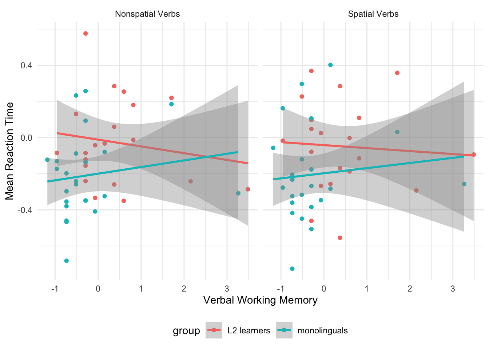

`summarise()` has grouped output by 'group'. You can override using the
`.groups` argument.| group | spatial_verb | Correct | SD |
|---|---|---|---|
| L2 learners | no | 0.82 | 0.16 |
| L2 learners | yes | 0.83 | 0.16 |
| monolinguals | no | 0.90 | 0.14 |
| monolinguals | yes | 0.94 | 0.14 |
Overall, monolinguals were more accurate in the lexical decision task than L2 learners. For reaction times, they were also faster overall (there was an effect). Visiospatial working memory was associated with lower rts for monolinguals, but higher rts for L2 learners (there was an effect). Oppositely, verbal working memory was associated with lower rts for L2 learners, but higher rts for monolinguals (there was not an effect here). Adding spatial verbs to the equation did not explain any additional variance.
All participants completed a lexical decision task with 24 critical items (12 spatial and 12 non-spatial verbs). They also completed two tasks measuring their working memory: a corsi task and a verbal working memory task.
The following analysis shows the results of the lexical decision task of two groups, L2 speakers of Spanish (n = 40) and native speakers of Spanish (n = 48).
Results are reported for both accuracy in the lexical decision task and reaction time. For accuracy, I have just included the mean accuracy (with sd) from each group and in each condition. For reaction time, a generalized mixed effects model was run in which log-transformed reaction time was the dependent variable. The independent variables were group (2 levels: L2 speaker or Spanish native speaker), corsi task z-score (continuous), verbal working memory task z-score (continuous), spatial verb (2 levels: spatial or non-spatial). In addition to these fixed effects, 2 two-way interactions and 2 three-way interactions were assessed. The two-way interactions were between group and the corsi z-score and group and the verbal working memory z-score, while the three-way interactions were group, corsi z-score and spatial verb, and group, verbal working memory score and spatial verb. A random intercept for participant was also included to take into account the nested structure of the data.
Takeaway: Monolinguals were more accurate than L2 learners in both verb types. Please see the table below.
`summarise()` has grouped output by 'group'. You can override using the
`.groups` argument.| group | spatial_verb | Correct | SD |
|---|---|---|---|
| L2 learners | no | 0.82 | 0.16 |
| L2 learners | yes | 0.83 | 0.16 |
| monolinguals | no | 0.90 | 0.14 |
| monolinguals | yes | 0.94 | 0.14 |
The results of nested model comparisons revealed a main effect of group (χ2(1) = 6.06; p < .05), meaning that there was a difference between how fast both groups reacted in their lexical decisions. Specifically, the monolinguals were about 17 percent faster to arrive to a decision than monolinguals (-0.19, [95% CI = -0.33 - -0.04]). Additionally, there was an interaction between group and the corsi z-score (χ2(1) = 5.42; p < .05).
There were no other main effects or interactions:
Corsi z-score - χ2(1) = 0.58; p = 0.45)
Verbal working memory z-score - χ2(1) = 0; p = 0.99)
Spatial verb - χ2(1) = 0.06; p = 0.8)
Verbal working memory z-score:group - χ2(1) = 0.39; p = 0.53)
Verbal working memory z-score:group - χ2(2) = 0.29; p = 0.87)
Corsi z-score:group:Spatial verb - χ2(2) = 0.21; p = 0.9)
These plots visualize each interaction, with reporting details from the summary repeated beneath them.
`geom_smooth()` using formula = 'y ~ x'Figure 1 shows the log-transformed reaction times with visiospatial working memory scores. There was an interaction between group and the corsi z-score (χ2(1) = 5.42; p < .05). This interaction suggests that the impact of visiospatial working memory varied as a function of group. Specifically, the L2 learners had a positive slope, suggesting that inscreased visiospatial working memory was associated with longer reaction times. The opposite was true for the monolinguals. Figure 2 shows the log-transformed reaction times with visiospatial working memory scores, and reveals an opposite trend. Although there was not an interaction between verbal working memoery and group χ2(1) = 0.39; p = 0.53), the slopes of the lines suggest that faster RTs are associated with higher verbal working memory for L2 learners, and slower RTs are associated with higher verbal working memory in monolinguals.
`geom_smooth()` using formula = 'y ~ x'`geom_smooth()` using formula = 'y ~ x'These figures show the 3-way interactions, and show that there was not evidence of any effect for spatial verbs. The trends observed in the previous two plots appear to hold true. Figure 3 shows reaction time for visiospatial verbs and non-visiospacial verbs for both groups and with visiospatial working memory. There was not a 3-way interaction between corsi z-score, group and spatial verb (χ2(2) = 0.21; p = 0.9). Figure 4 shows the same information but with verbal working memeory. Again, there was not a 3-way interaction between verbal working memeory, group, and spatial verb; χ2(2) = 0.29; p = 0.87).
`geom_smooth()` using formula = 'y ~ x'